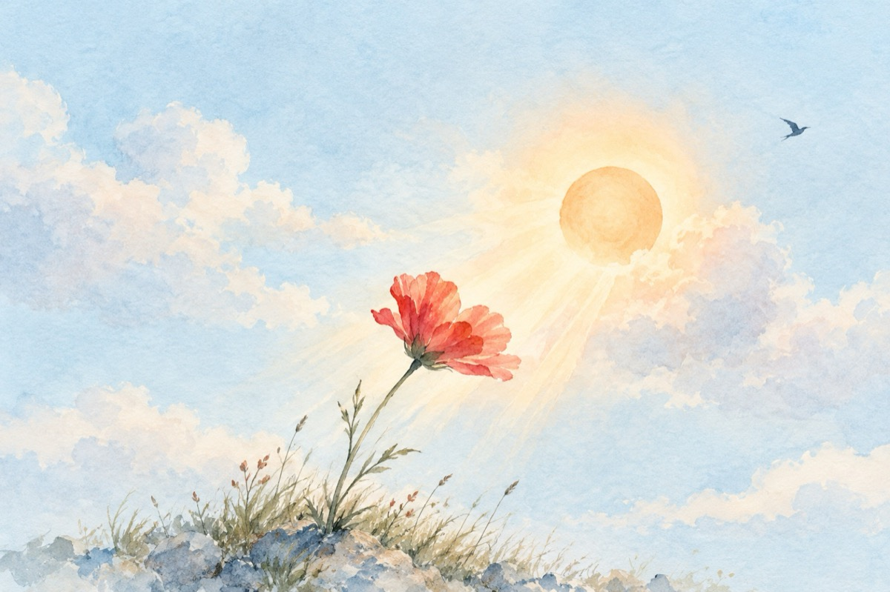

De când te aștept
De când te-aștept, de când,
Visata mea comoară
De tine sunt flămând
Zeița mea fecioară!
Aș vrea să fiu un soare
Căldura să ți-o dau
Aș vrea să fii o floare
În brațe să te am.
Te venerez de-a pururi
O rug mea, venită
Sosită dintre ceruri
Pură, neprihănită!
Ești adevăr sau vis
Zeița ta ea fecioară?
Am sufletul deschis
Și plin cu-a ta comoară!
De când te-aștept, de când
Visul să-mi împlinești
Eu cel mereu flămând,
Iubirea mea tu ești!
Vasile Groza
Apare și în: Privește-mă în ochi (2018).